GALLERY
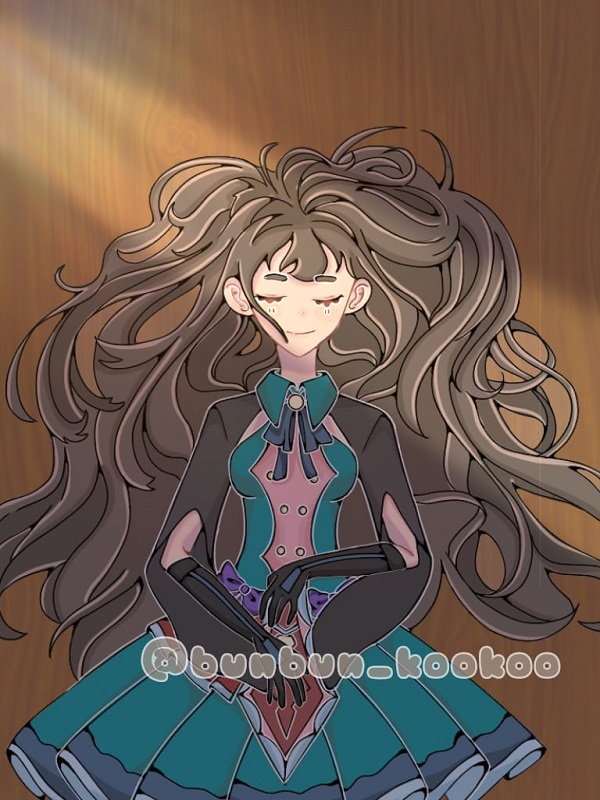 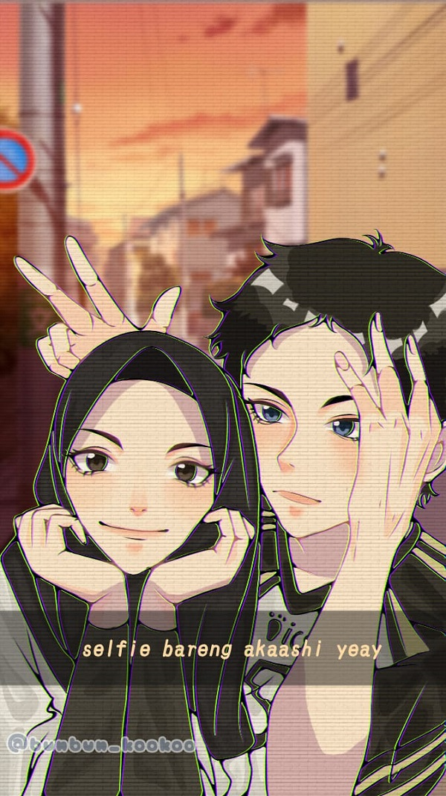
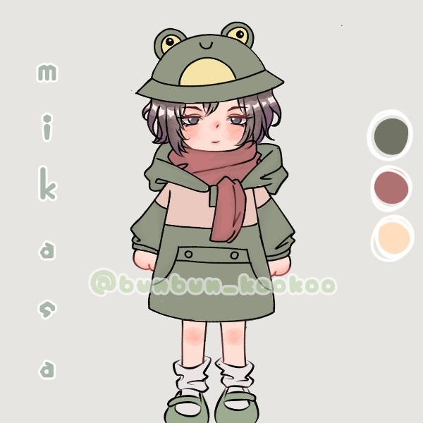
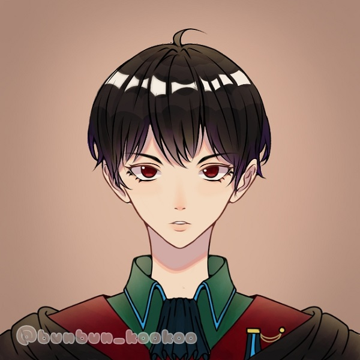
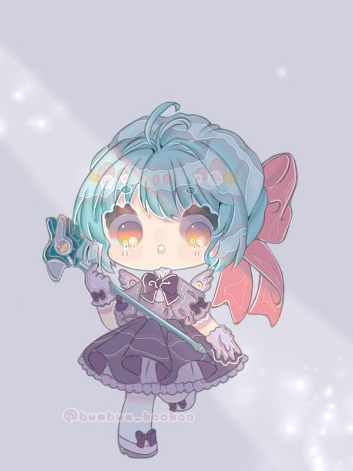
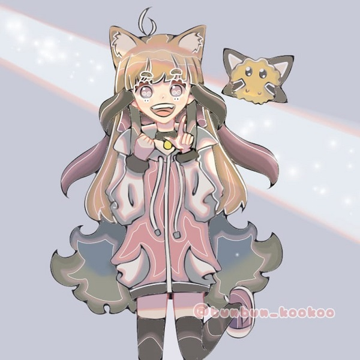
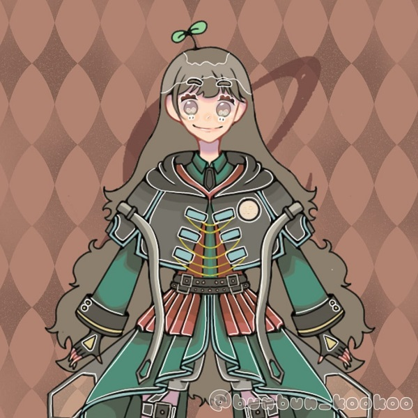
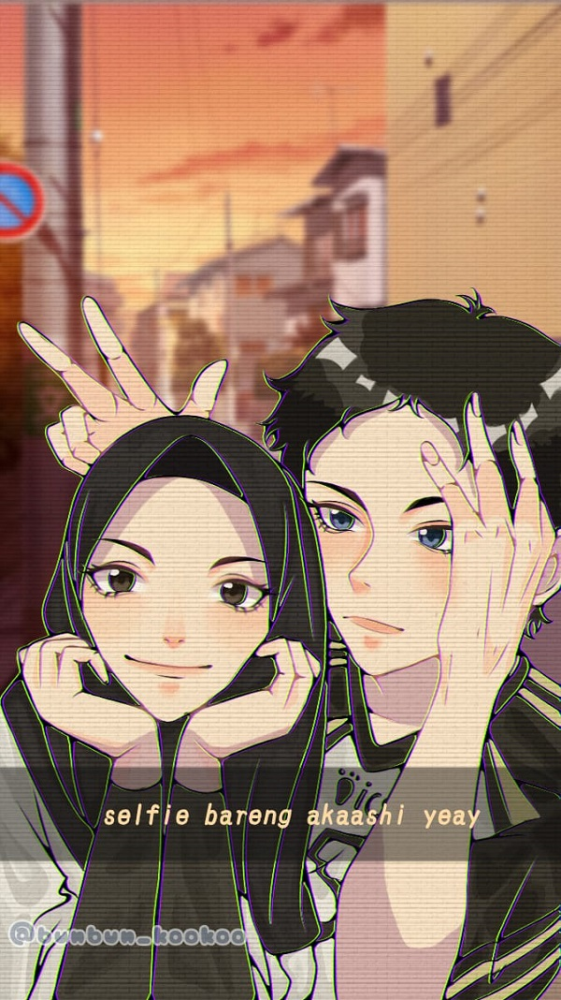
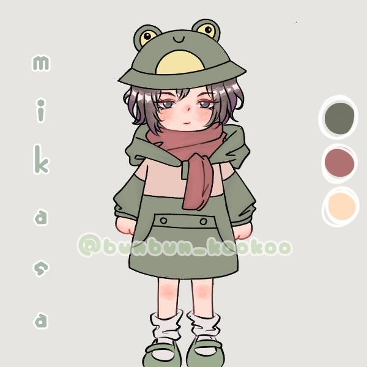
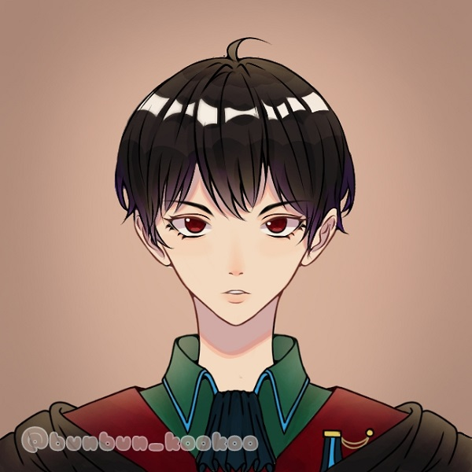
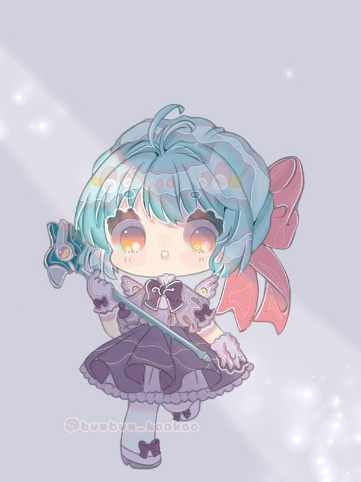
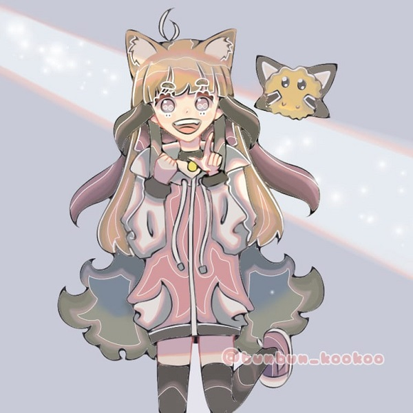
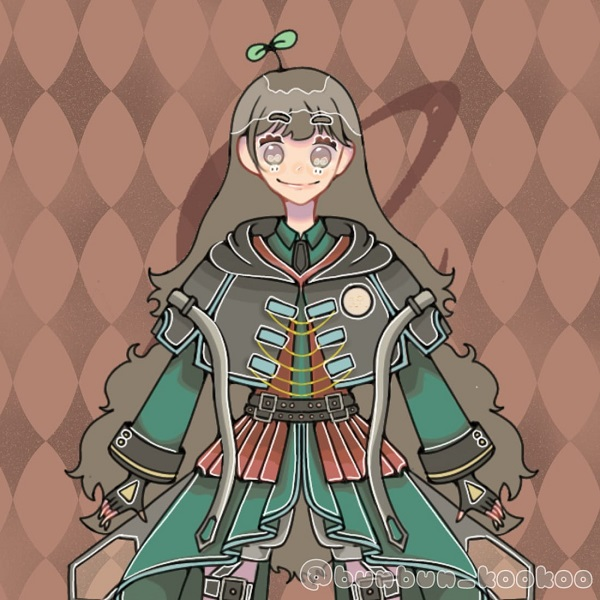
Halo teman-teman! sebelumnya saya akan memperkenalkan diri terlebih dahulu. Namaku adalah Nirina Naila As'syarie. Saya lahir pada tanggal 5 April 2004. Yap! sekarang adalah ulang tahunku yang ke-17 tahun hehehe. Saya lahir di Karawang, Jawa Barat, Indonesia. Alamatku berada di Perumahan Bumi Mutiara 2 Blok C2 No.6 RT 01/RW 13, Ds. Dawuan Barat. Kec. Cikampek, Kab. Karawang. Saya beragama islam. Saya merupakan anak pertama dari tiga bersaudara. Nama Ayahku adalah Hasyim As'syarie. Nama Ibuku adalah Rusti Paramitha. Dan nama kedua adikku adalah Syaqie Kirana dan Inara Azalia. Hobiku adalah menggambar. Saya sudah menyukai menggambar sejak memasuki TK.
Sekarangpun saya masih sangat suka menggambar. Saya dulu suka menggambar pemandangan gunung saat masih SD. Lalu, sekarang mencoba menggambar karakter yang saya sukai dari anime. Saya sangat senang mencoba hal-hal yang baru. Dan selama masa pandemi Covid-19 ini, saya memiliki banyak waktu luang, sehingga saya bisa mengasah skill hobi saya. Sejak masa pandemi, saya mencoba menggambar secara digital. Sebelumnya saya sudah pernah mencoba melalui aplikasi Photoshop CS3. Tetapi, sekarang sedang mendalami hobi saya dengan aplikasi Ibis Paint X. Saya suka dengan Ibis Paint X karena fitur-fiturnya mudah dipahami bagi pemula seperti saya.
| DATA DIRI | KETERANGAN | FOTO |
| Nama | Nirina Naila As'syarie | 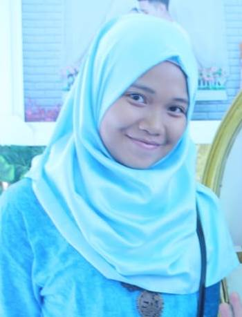 |
| Tempat/Tanggal Lahir | Karawang, 05 April 2004 | |
| Alamat | Perumahan Bumi Mutiara 2 Blok C2 No.6 RT 01/RW 13, Ds. Dawuan Barat. Kec. Cikampek, Kab. Karawang. | |
| Agama | Islam | |
| Jenis Kelamin | Perempuan | |
| Pekerjaan | Pelajar | |
| Hobi | Menggambar |
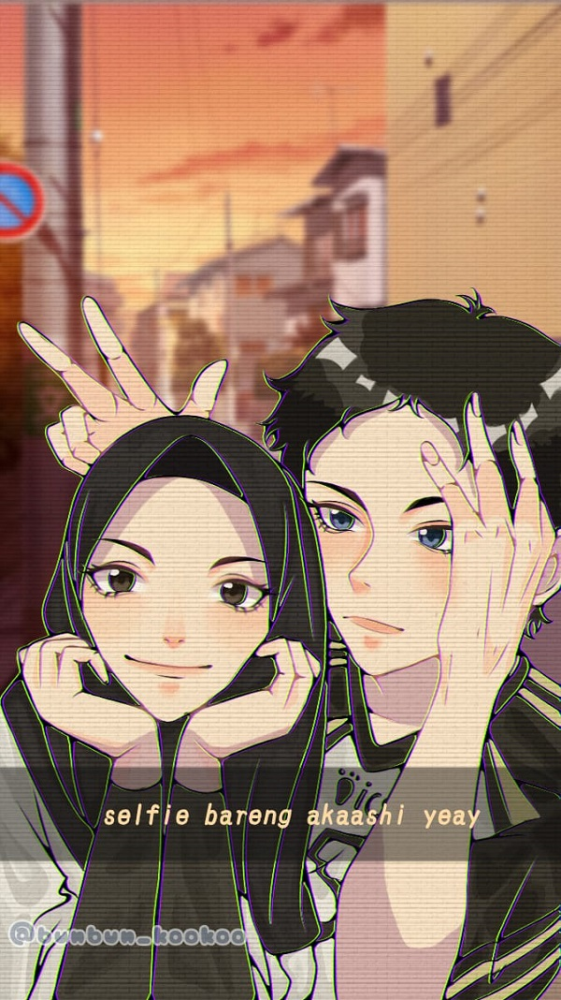
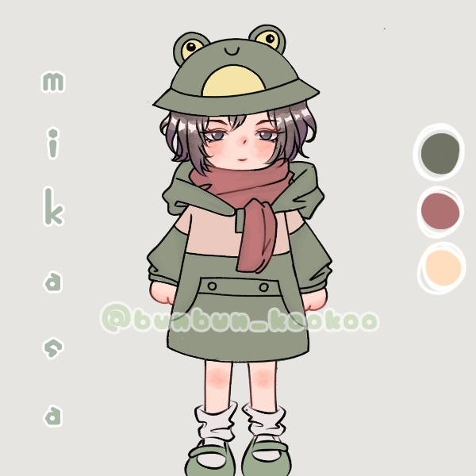
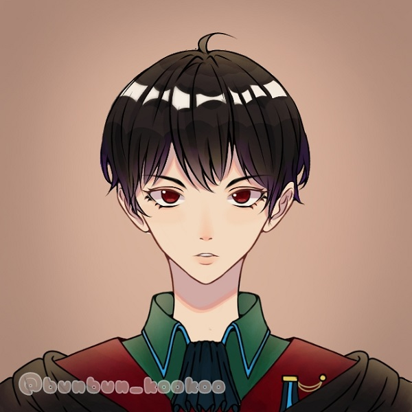
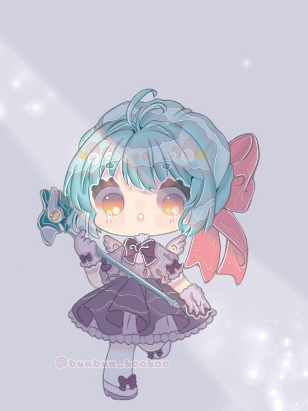
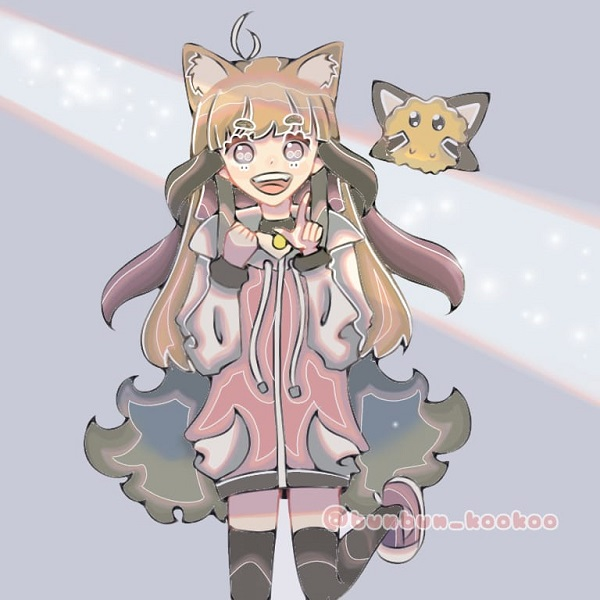
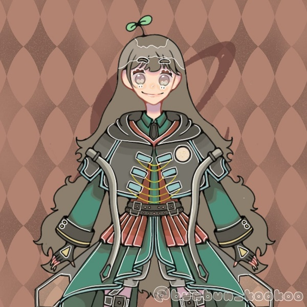